Why this project
User administration is a lifecycle, not a one-time provisioning task. This lab follows test accounts through creation, profile updates, password reset, and session revocation. Each stage is documented separately so the action shown in the screenshot matches the operation being described.
Create Microsoft Entra ID user accounts
Open Microsoft Entra ID
Used the Azure Portal search bar to find Microsoft Entra ID and opened the service.
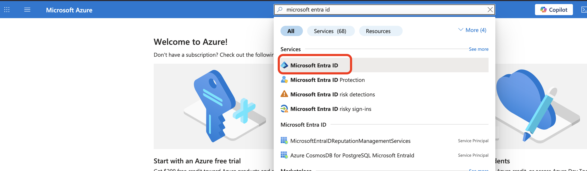
Start creating a new user
From the Microsoft Entra ID Overview page, opened + Add, selected User, and then selected Create new user.
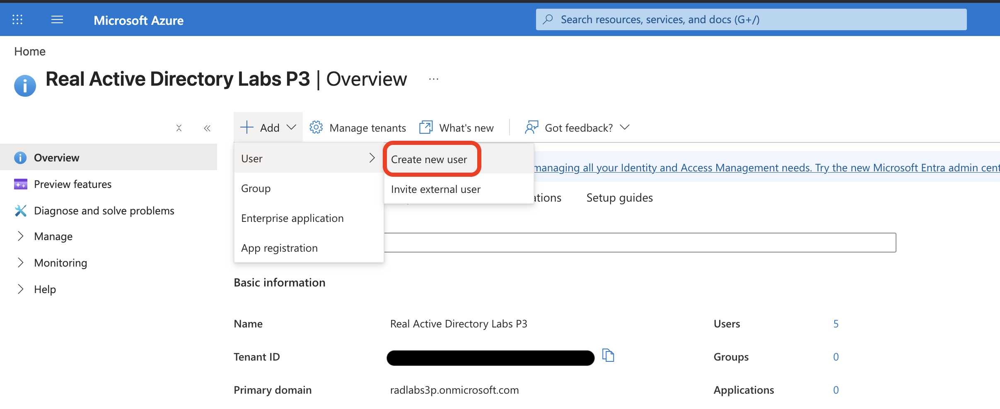
Create RP One
Entered rp.one as the user principal name and RP One as the display name. The password was left on auto-generate, then Review + create was selected before creating the account.
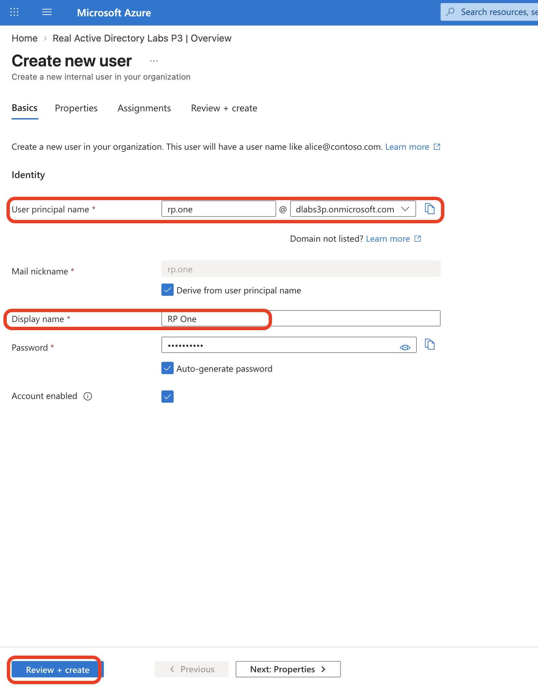
Create RP Two
Repeated the same process for rp.two with the display name RP Two.
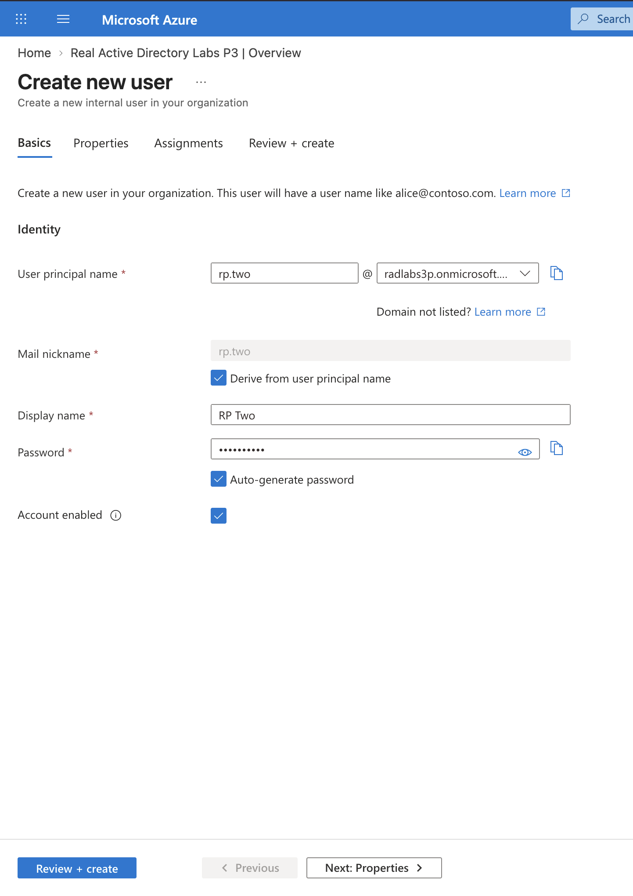
Create RP Three
Created the third test account using rp.three with the display name RP Three.
Verify all three users
Expanded Manage, opened Users, and verified that RP One, RP Two, and RP Three appeared in the user list. The page may require a manual refresh before newly created directory objects appear.
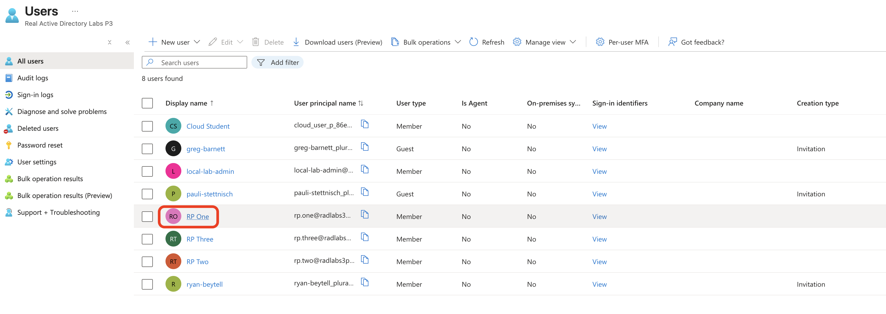
Result: three test Member accounts were created and verified in Microsoft Entra ID before moving on to account modification.
Modify a Microsoft Entra ID user account
Open RP One
Selected RP One from the Users list and reviewed the account Overview page and the available user-management options.
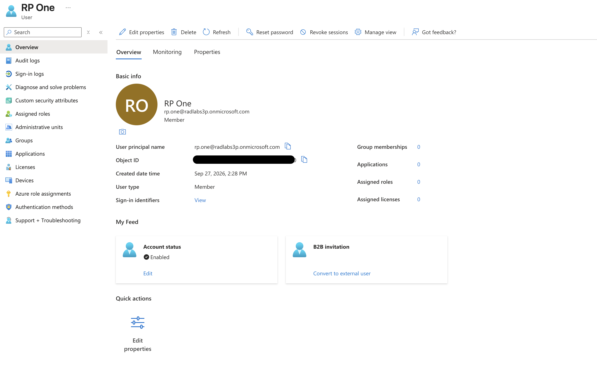
Open Edit properties
From the toolbar at the top of the account Overview page, selected Edit properties.
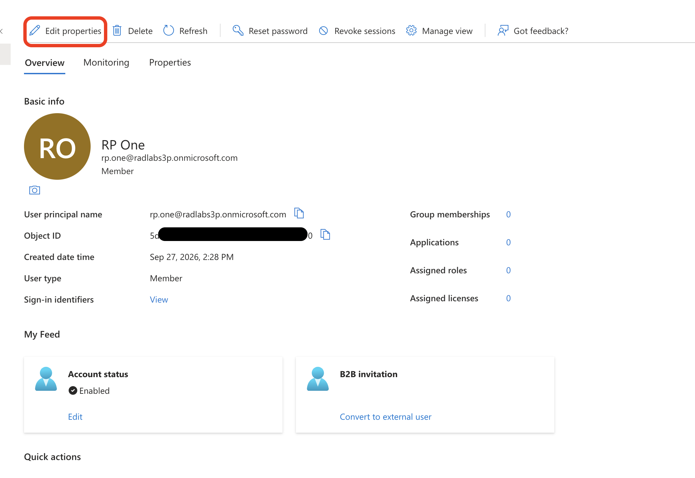
Update identity fields
On the Identity tab, set First name to RP and Last name to One. These are separate directory attributes from the display name.
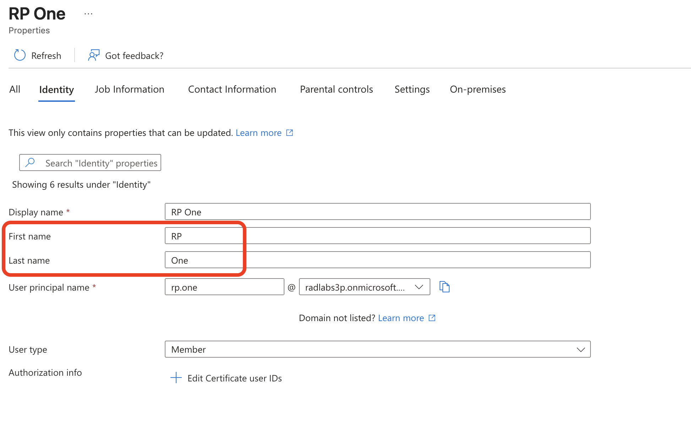
Update job information and save
On the Job Information tab, set Job title to Helpdesk Technician and Department to IT Helpdesk, then selected Save.
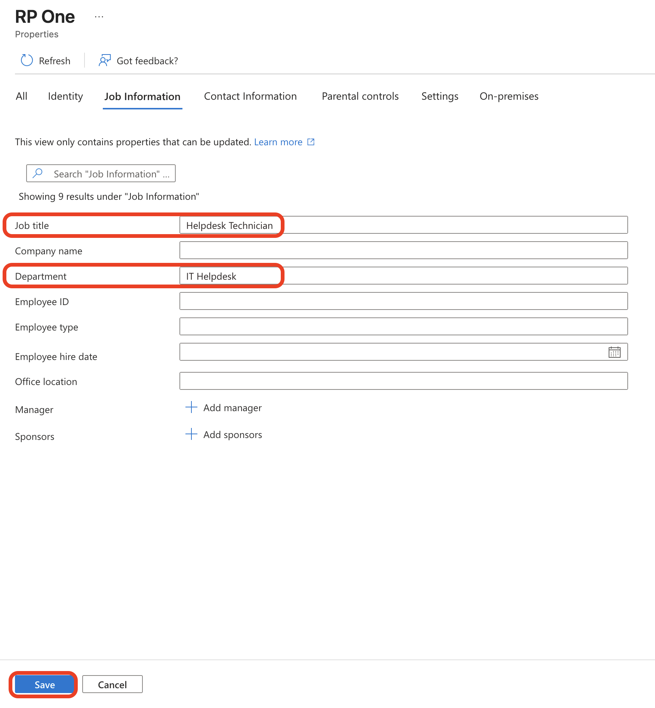
Identity attributes are commonly sourced from an authoritative HR or identity system rather than maintained manually. Attributes such as department and job title can also be used in dynamic group membership rules.
Open Reset password
Returned to the account Overview page and selected Reset password from the toolbar.
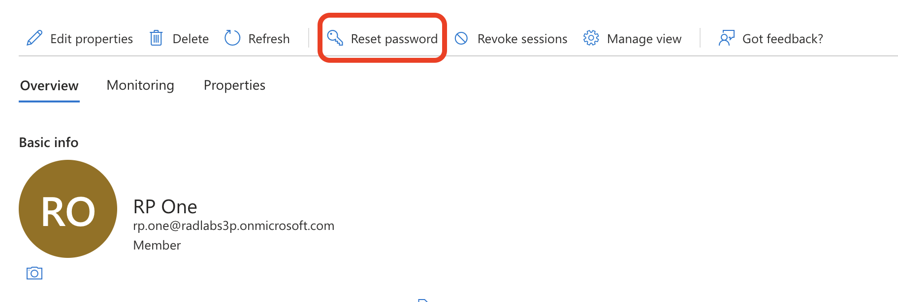
Confirm the password reset
The reset pane identified rp.one@radlabs3p.onmicrosoft.com and stated that the account would receive a temporary password that must be changed at the next sign-in. Selected Reset password to continue.
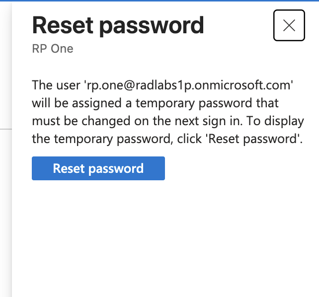
Record the temporary password
The reset completed successfully and the Portal displayed the temporary password. The password was redacted in the screenshot and would need to be provided to the intended user through an appropriate verified channel.
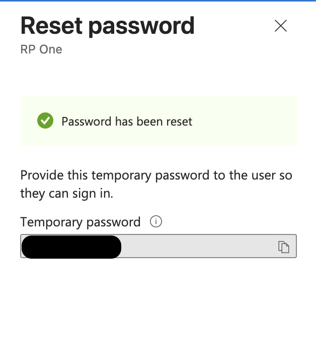
Where self-service password reset is enabled and users are appropriately registered, many routine password resets can be completed without an administrator handling a temporary credential.
Result: RP One's profile attributes were updated and the account received a temporary password that must be changed at next sign-in.
Revoke access to a Microsoft Entra ID user account
Locate Revoke sessions
While still in RP One's profile, returned to the Overview page and located Revoke sessions in the toolbar. This is the control used to begin revoking the user's Microsoft Entra session state and refresh tokens when fresh authentication is required.
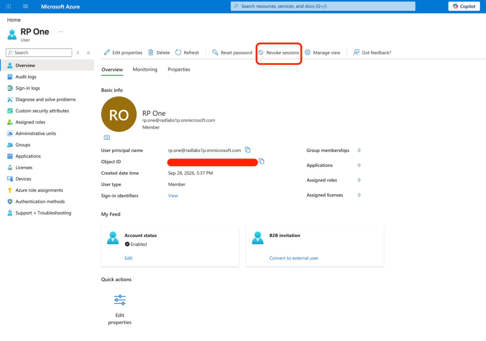
Revoking sessions should not be described as an instantaneous guarantee that every application session disappears. Existing access tokens and application-controlled cookies can remain usable until they expire or are reevaluated.
Result: the account lifecycle workflow reached the session-revocation control for RP One. In an incident-response scenario, session revocation would normally be combined with credential changes and investigation rather than treated as a complete remediation by itself.
What this demonstrates
- User administration spans creation, profile maintenance, credential recovery, and session revocation — not just initial account creation.
- Profile properties such as first name, last name, job title, and department are separate directory attributes and can support downstream identity workflows such as dynamic group membership.
- Password reset and session revocation address different aspects of account recovery. A reset changes the credential, while revocation invalidates Entra-managed refresh/session state; neither should be described as instantly terminating every possible application session.
This project was performed in a controlled training tenant. The steps document the requested lab workflow; production identity operations would also follow organizational approval, logging, access-control, and incident-response procedures.